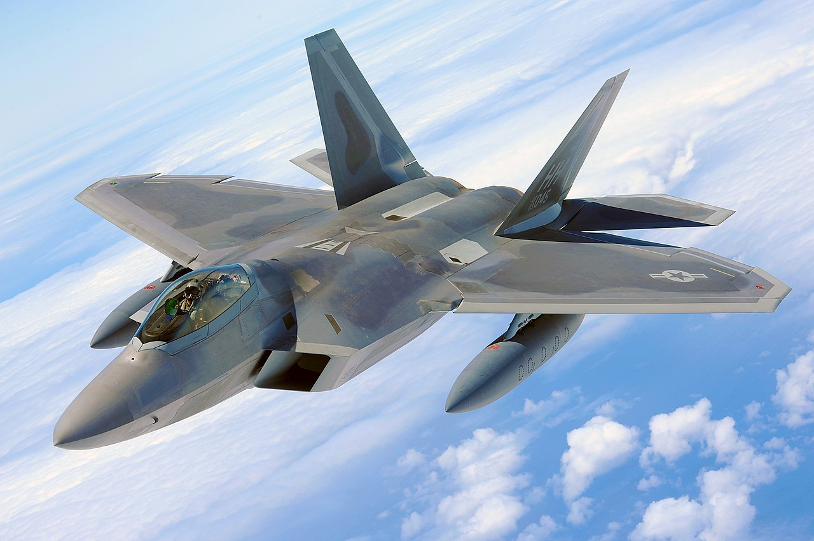
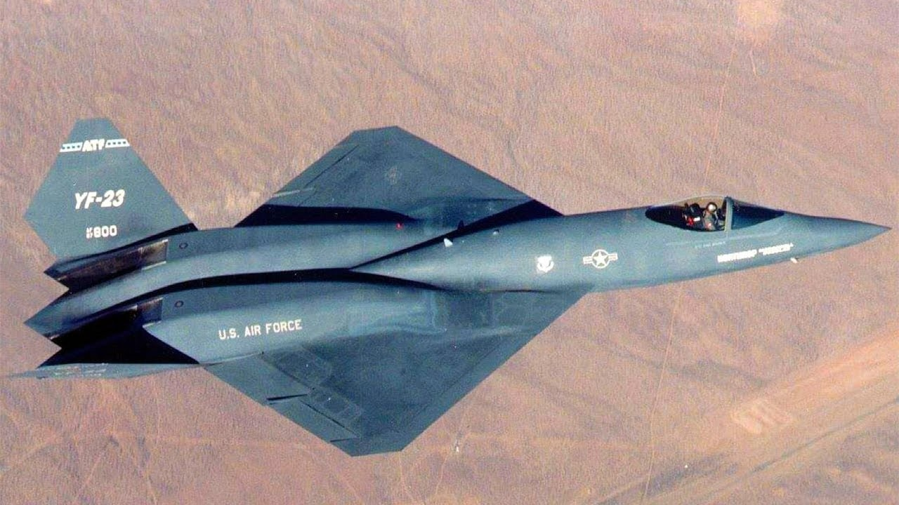
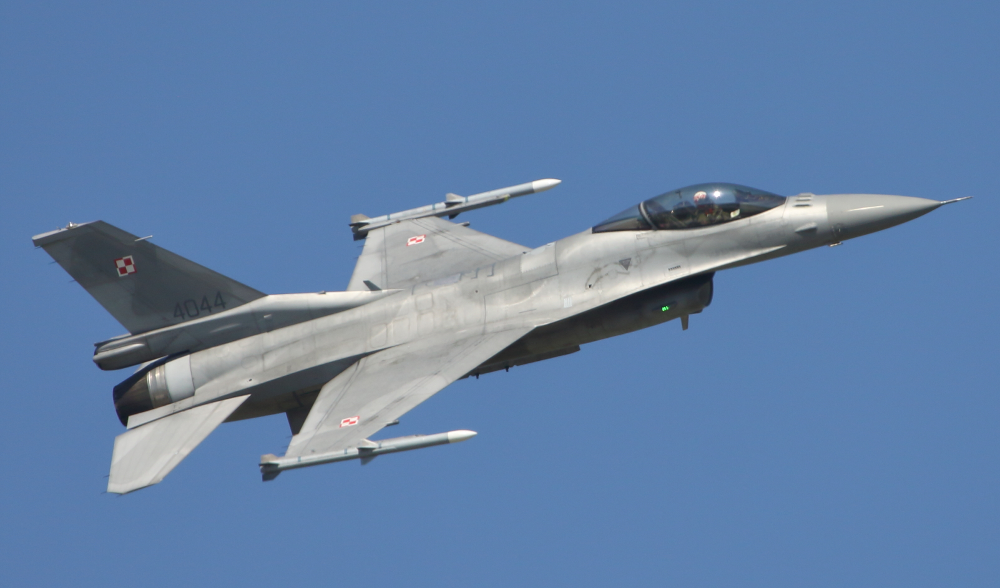

F-22 Raptor

Lockheed Martin F-22 Raptor – amerykański myśliwiec przewagi powietrznej. Wykonany w technologii stealth, został zaprojektowany głównie do walki z lotnictwem ZSRR w wypadku naruszenia przestrzeni powietrznej USA, posiada jednak uzbrojenie pozwalające na atakowanie celów naziemnych, prowadzenie wojny elektronicznej i nasłuchu elektronicznego. Samolot nosił oznaczenie YF-22, następnie przez trzy lata przed wprowadzeniem do służby Sił Powietrznych Stanów Zjednoczonych F/A-22, by ostatecznie przyjąć nazwę F-22A. Głównym wytwórcą jest koncern Lockheed Martin, odpowiedzialny za konstrukcję płatowca, uzbrojenie oraz końcowy montaż samolotu. Firma Boeing Integrated Defense Systems dostarcza natomiast skrzydła, tylną część kadłuba oraz awionikę.
Czytaj dalej...
YF-23 Black Widow

YF-23 Black Widow II – dwa prototypowe samoloty myśliwskie piątej generacji skonstruowane i zbudowane przez Northrop oraz McDonnell Douglas w ramach projektu Advanced Tactical Fighter (ATF). Projekt został zamknięty w roku 1991 z powodu wyboru dla Sił Powietrznych Stanów Zjednoczonych konkurencyjnego samolotu F-22 Raptor opracowanego przez koncerny Lockheed Martin oraz Boeing.
Po rozstrzygnięciu konkursu obydwa prototypy YF-23 zostały przeniesione z zakładów Northropa do ośrodka NASA w Edwards w Kalifornii. Jeden z nich został następnie użyty przez NASA do prac badawczych, drugi natomiast przez cały czas pozostawał w magazynach ośrodka, przy czym obydwa zostały pozbawione jednostek napędowych. Obydwa także pozostawały w dyspozycji NASA do roku 1996, po czym zostały wypożyczone przez agencje kosmiczną do Western Museum of Flight w Hawthorne w Kalifornii oraz USAF Test Center Museum w bazie lotniczej Edwards AFB w tym samym stanie.
Czytaj dalej...
F-35 Lightning
 Lockheed Martin F-35 Lightning II – amerykański jednomiejscowy, jednosilnikowy myśliwiec wielozadaniowy piątej generacji zbudowany przez korporację Lockheed Martin w ramach projektu Joint Strike Fighter, który miał na celu zbudowanie maszyny spełniającej wymagania wszystkich rodzajów amerykańskich sił zbrojnych. Wersja prototypowa samolotu była znana pod nazwą X-35 JSF, ale 7 lipca 2006 roku maszyna dostała nową oficjalną nazwę Lightning II. F-35 Lightning II jest zdolny do wykonywania misji bliskiego wsparcia, bombardowań i typowo myśliwskich zadań walki powietrznej. Projekt samolotu jest finansowany wspólnie przez rządy Stanów Zjednoczonych, Wielkiej Brytanii i innych krajów zainteresowanych zakupem tej maszyny. F-35 Lightning II został zbudowany pod kierownictwem firmy Lockheed Martin, przy współpracy z BAE Systems i Northrop Grumman.
Czytaj dalej...
Lockheed Martin F-35 Lightning II – amerykański jednomiejscowy, jednosilnikowy myśliwiec wielozadaniowy piątej generacji zbudowany przez korporację Lockheed Martin w ramach projektu Joint Strike Fighter, który miał na celu zbudowanie maszyny spełniającej wymagania wszystkich rodzajów amerykańskich sił zbrojnych. Wersja prototypowa samolotu była znana pod nazwą X-35 JSF, ale 7 lipca 2006 roku maszyna dostała nową oficjalną nazwę Lightning II. F-35 Lightning II jest zdolny do wykonywania misji bliskiego wsparcia, bombardowań i typowo myśliwskich zadań walki powietrznej. Projekt samolotu jest finansowany wspólnie przez rządy Stanów Zjednoczonych, Wielkiej Brytanii i innych krajów zainteresowanych zakupem tej maszyny. F-35 Lightning II został zbudowany pod kierownictwem firmy Lockheed Martin, przy współpracy z BAE Systems i Northrop Grumman.
Czytaj dalej...
F-14 Tomcat
 Grumman F-14 Tomcat – amerykański naddźwiękowy myśliwiec pokładowy o zmiennej geometrii skrzydeł opracowany i produkowany przez wytwórnię Grumman Corpration w Bethpage i Calverton na Long Island. Pierwotnie służył do obrony floty, wywalczania przewagi powietrznej i prowadzenia rozpoznania taktycznego, później – przez dodanie możliwości przenoszenia bomb – przystosowany został do uderzeń na cele naziemne.
F-14 wszedł do służby w United States Navy w 1972 roku, zastępując F-4 Phantomy II. W roku 1976 wyeksportowano siedemdziesiąt dziewięć maszyn do Iranu, który stał się jedynym poza Stanami Zjednoczonymi użytkownikiem Tomcatów. Oficjalne wycofanie maszyny ze służby w US Navy nastąpiło 22 września 2006 roku w Naval Air Station (bazie lotniczej) Oceana. Następcą Tomcata został wielozadaniowy F/A-18E/F Super Hornet, F-14 nadal pozostają jednak na wyposażeniu lotnictwa Iranu.
Czytaj dalej...
Grumman F-14 Tomcat – amerykański naddźwiękowy myśliwiec pokładowy o zmiennej geometrii skrzydeł opracowany i produkowany przez wytwórnię Grumman Corpration w Bethpage i Calverton na Long Island. Pierwotnie służył do obrony floty, wywalczania przewagi powietrznej i prowadzenia rozpoznania taktycznego, później – przez dodanie możliwości przenoszenia bomb – przystosowany został do uderzeń na cele naziemne.
F-14 wszedł do służby w United States Navy w 1972 roku, zastępując F-4 Phantomy II. W roku 1976 wyeksportowano siedemdziesiąt dziewięć maszyn do Iranu, który stał się jedynym poza Stanami Zjednoczonymi użytkownikiem Tomcatów. Oficjalne wycofanie maszyny ze służby w US Navy nastąpiło 22 września 2006 roku w Naval Air Station (bazie lotniczej) Oceana. Następcą Tomcata został wielozadaniowy F/A-18E/F Super Hornet, F-14 nadal pozostają jednak na wyposażeniu lotnictwa Iranu.
Czytaj dalej...
F-16 Fighting Falcon

F-16 Fighting Falcon – samolot wielozadaniowy zaprojektowany przez amerykańską wytwórnię General Dynamics. Od drugiej połowy lat 70. XX wieku do roku 2012 wyprodukowano 4500 egzemplarzy. Od 1993 roku myśliwiec produkowany jest przez Lockheed Corporation (obecnie Lockheed Martin).
F-16 jest użytkowany przez siły powietrzne 26 krajów, w tym Polski (do której pierwsza para trafiła 8 listopada 2006). W Polsce, wbrew dosłownemu tłumaczeniu, przyjęto nazwę Jastrząb, dla odróżnienia od używanego w polskim lotnictwie śmigłowca wielozadaniowego PZL W-3 Sokół. Wśród amerykańskich pilotów znany pod nazwą Viper.
Czytaj dalej...